vignettes/prep_climate_ubc.Rmd
prep_climate_ubc.RmdFrom: Lam, Vicky v.lam@oceans.ubc.ca 2019-01-22
Current_MCP1.tif: Maximum Catch Potential (MCP) of more than 1,000 marine fish and invertebrates species in the high seas at the current status (20 years average from 1995 to 2014) under GFDL 8.5 scenario
MCP2050_RCP85.tif: The projected Maximum Catch Potential of more than 1,000 marine fish and invertebrates species in the high seas in the future (20 years average from 2041to 2060) under GFDL 8.5 scenario
hsmcpcap851.tif: The change in MCP in the 2050s relative to the current status under GFDL 8.5 scenario (I cap the change greater than 2 at 2).
library(tidyverse)
library(raster)
library(fs)
library(glue)
library(here)
par(mar=c(0.1,0.1,0.1,0.1))
dir_ubc <- "~/Gdrive Ecoquants/projects/bbnj/data/raw/UBC-exploited-fish-projections"
tifs <- list.files(dir_ubc, "*.tif$", full.names = T)
cat(paste(basename(tifs), collapse="\n"))
#> Current_MCP1.tif
#> hsmcpcap851.tif
#> MCP2050_RCP85.tiflibrary(RColorBrewer)
pal <- colorRampPalette(brewer.pal(11, "Spectral"))
cols <- rev(pal(255))
r_now <- raster(file.path(dir_ubc, "Current_MCP1.tif"))
r_future <- raster(file.path(dir_ubc, "MCP2050_RCP85.tif"))
r_now
#> class : RasterLayer
#> dimensions : 360, 720, 259200 (nrow, ncol, ncell)
#> resolution : 0.5, 0.5 (x, y)
#> extent : -180, 180, -90, 90 (xmin, xmax, ymin, ymax)
#> coord. ref. : +proj=longlat +datum=WGS84 +no_defs +ellps=WGS84 +towgs84=0,0,0
#> data source : /Users/bbest/Gdrive Ecoquants/projects/bbnj/data/raw/UBC-exploited-fish-projections/Current_MCP1.tif
#> names : Current_MCP1
#> values : -3.402823e+38, 484.9129 (min, max)
r_future
#> class : RasterLayer
#> dimensions : 360, 720, 259200 (nrow, ncol, ncell)
#> resolution : 0.5, 0.5 (x, y)
#> extent : -180, 180, -90, 90 (xmin, xmax, ymin, ymax)
#> coord. ref. : +proj=longlat +datum=WGS84 +no_defs +ellps=WGS84 +towgs84=0,0,0
#> data source : /Users/bbest/Gdrive Ecoquants/projects/bbnj/data/raw/UBC-exploited-fish-projections/MCP2050_RCP85.tif
#> names : MCP2050_RCP85
#> values : 0, 535.1569 (min, max)
plot(r_now, col = cols, main="now")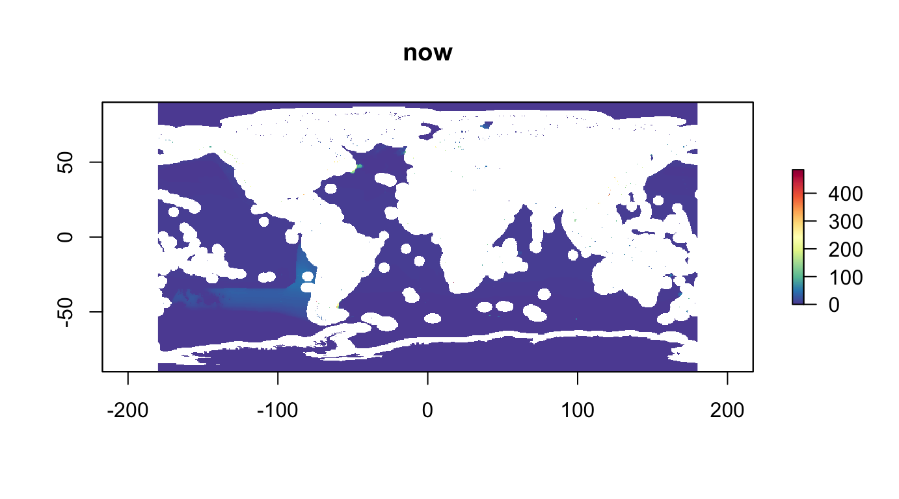
plot(r_future, col = cols, main="future")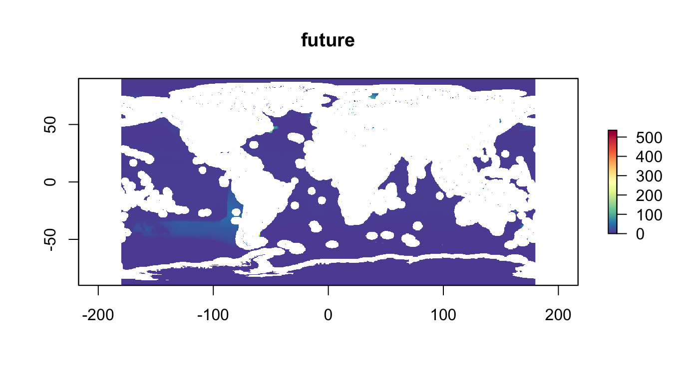
hist(r_now, main="now")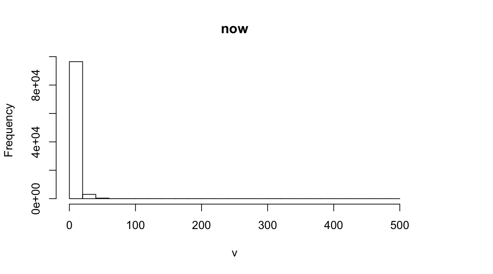
hist(r_future, main="future")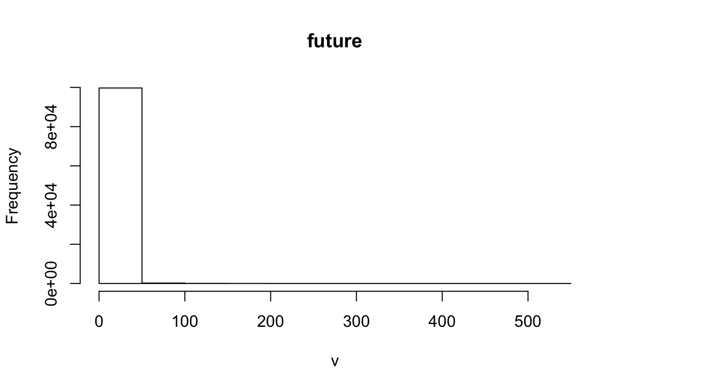
log(r_now)
#> class : RasterLayer
#> dimensions : 360, 720, 259200 (nrow, ncol, ncell)
#> resolution : 0.5, 0.5 (x, y)
#> extent : -180, 180, -90, 90 (xmin, xmax, ymin, ymax)
#> coord. ref. : +proj=longlat +datum=WGS84 +no_defs +ellps=WGS84 +towgs84=0,0,0
#> data source : in memory
#> names : layer
#> values : -Inf, 6.183969 (min, max)
log(r_future)
#> class : RasterLayer
#> dimensions : 360, 720, 259200 (nrow, ncol, ncell)
#> resolution : 0.5, 0.5 (x, y)
#> extent : -180, 180, -90, 90 (xmin, xmax, ymin, ymax)
#> coord. ref. : +proj=longlat +datum=WGS84 +no_defs +ellps=WGS84 +towgs84=0,0,0
#> data source : in memory
#> names : layer
#> values : -Inf, 6.28256 (min, max)
plot(log(r_now), col = cols, main="log(now)")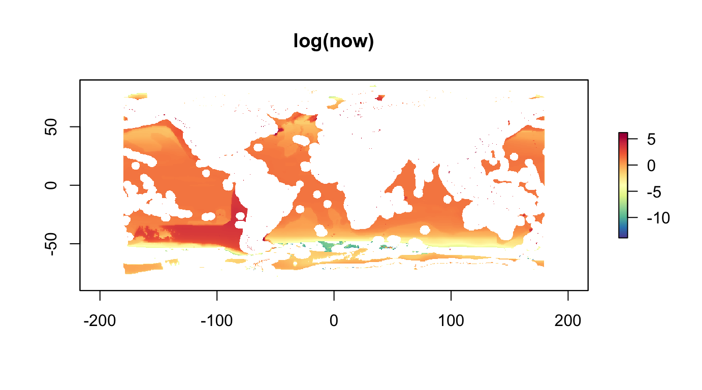
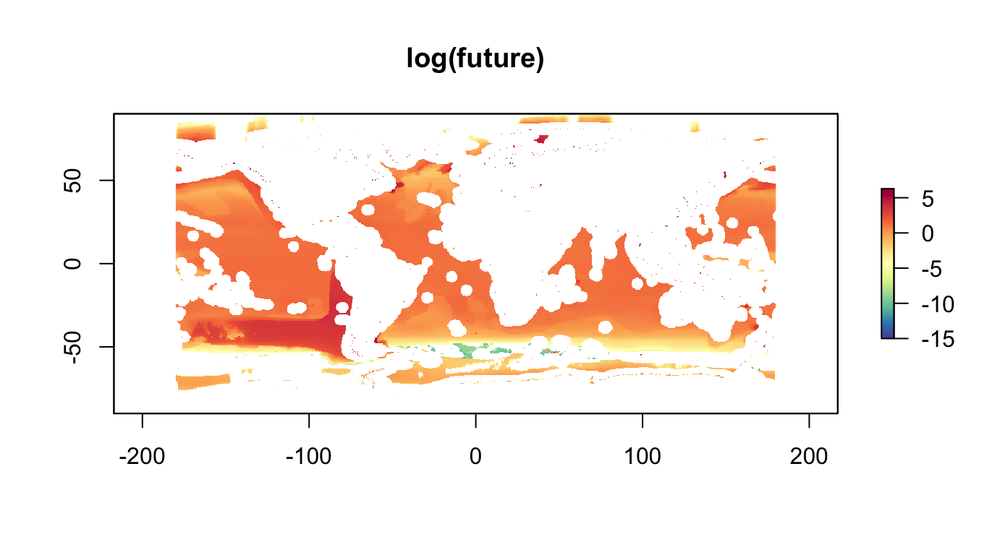
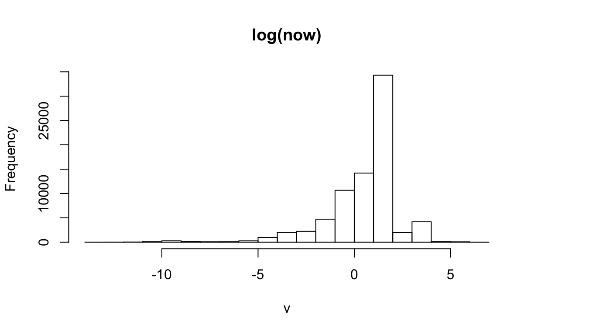
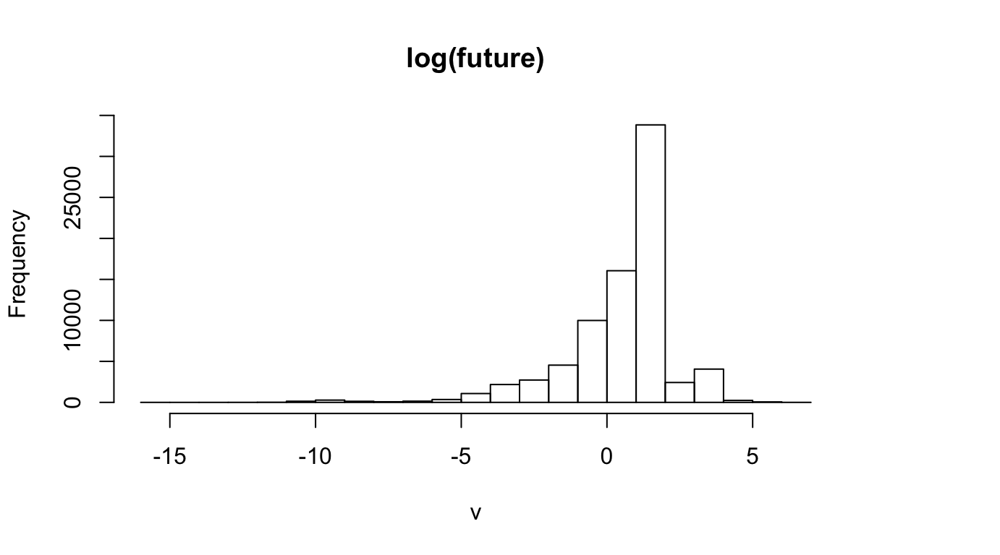
r_dif <- r_future - r_now
r_dif_clamped0 <- raster(file.path(dir_ubc, "hsmcpcap851.tif"))
r_dif_clamped1 <- r_dif
r_dif_clamped1[r_dif > 2] <- 2
r_dif_clamped1[r_dif < -1] <- -1
r_dif
#> class : RasterLayer
#> dimensions : 360, 720, 259200 (nrow, ncol, ncell)
#> resolution : 0.5, 0.5 (x, y)
#> extent : -180, 180, -90, 90 (xmin, xmax, ymin, ymax)
#> coord. ref. : +proj=longlat +datum=WGS84 +no_defs +ellps=WGS84 +towgs84=0,0,0
#> data source : in memory
#> names : layer
#> values : -112.9701, 92.71387 (min, max)
r_dif_clamped0
#> class : RasterLayer
#> dimensions : 360, 720, 259200 (nrow, ncol, ncell)
#> resolution : 0.5, 0.5 (x, y)
#> extent : -180, 180, -90, 90 (xmin, xmax, ymin, ymax)
#> coord. ref. : +proj=longlat +datum=WGS84 +no_defs +ellps=WGS84 +towgs84=0,0,0
#> data source : /Users/bbest/Gdrive Ecoquants/projects/bbnj/data/raw/UBC-exploited-fish-projections/hsmcpcap851.tif
#> names : hsmcpcap851
#> values : -1, 2 (min, max)
r_dif_clamped1
#> class : RasterLayer
#> dimensions : 360, 720, 259200 (nrow, ncol, ncell)
#> resolution : 0.5, 0.5 (x, y)
#> extent : -180, 180, -90, 90 (xmin, xmax, ymin, ymax)
#> coord. ref. : +proj=longlat +datum=WGS84 +no_defs +ellps=WGS84 +towgs84=0,0,0
#> data source : in memory
#> names : layer
#> values : -1, 2 (min, max)
plot(r_dif, col = cols, main="dif")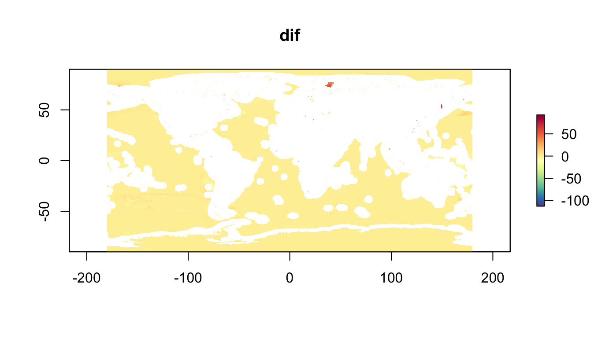
plot(r_dif_clamped0, col = cols, main="dif_clamped0")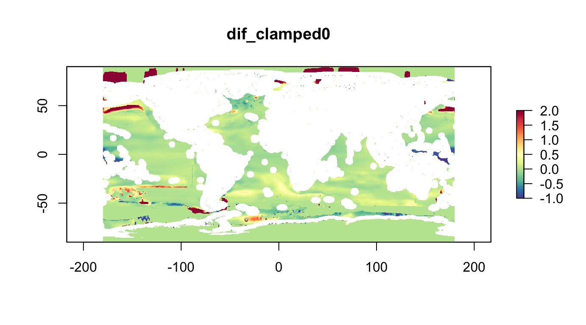
plot(r_dif_clamped1, col = cols, main="dif_clamped1")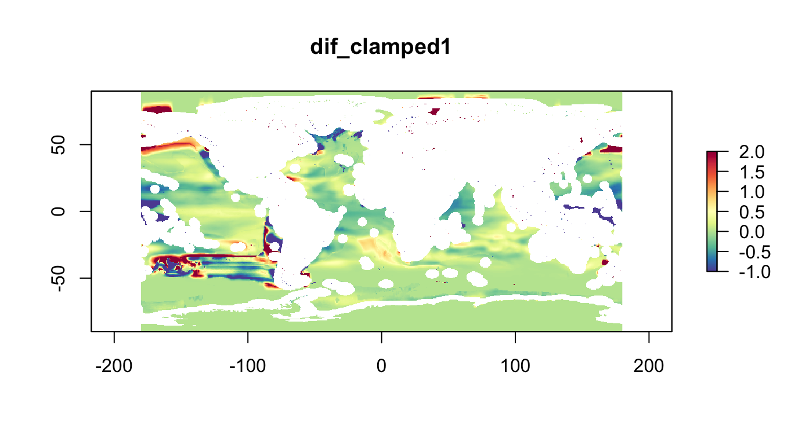
hist(r_dif, main="dif")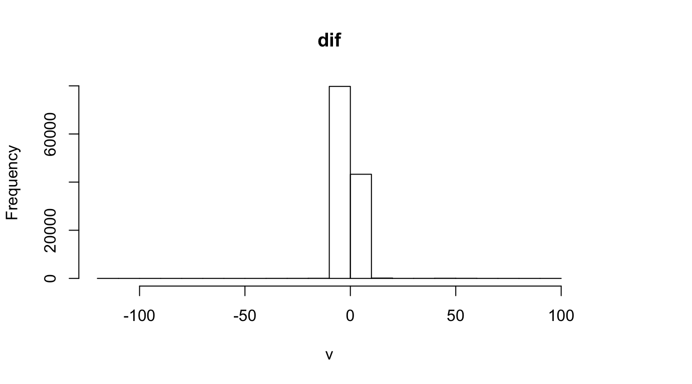
hist(r_dif_clamped0, main="dif_clamped0")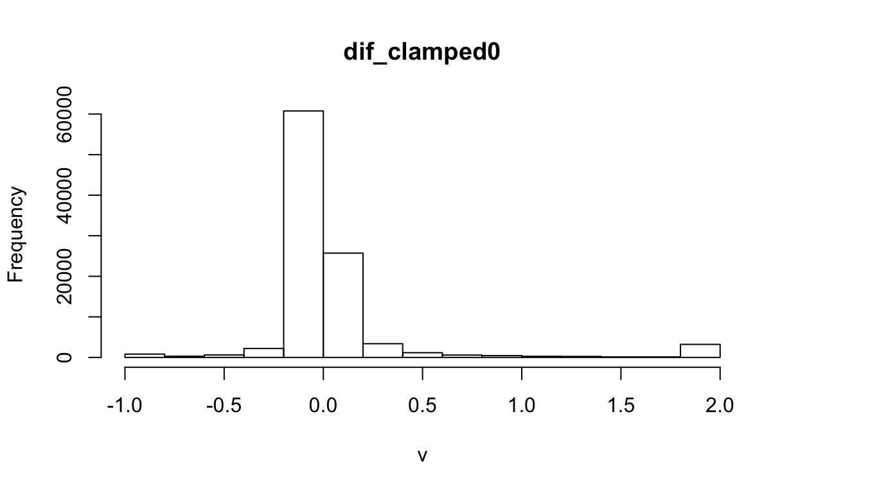
hist(r_dif_clamped1, main="dif_clamped1")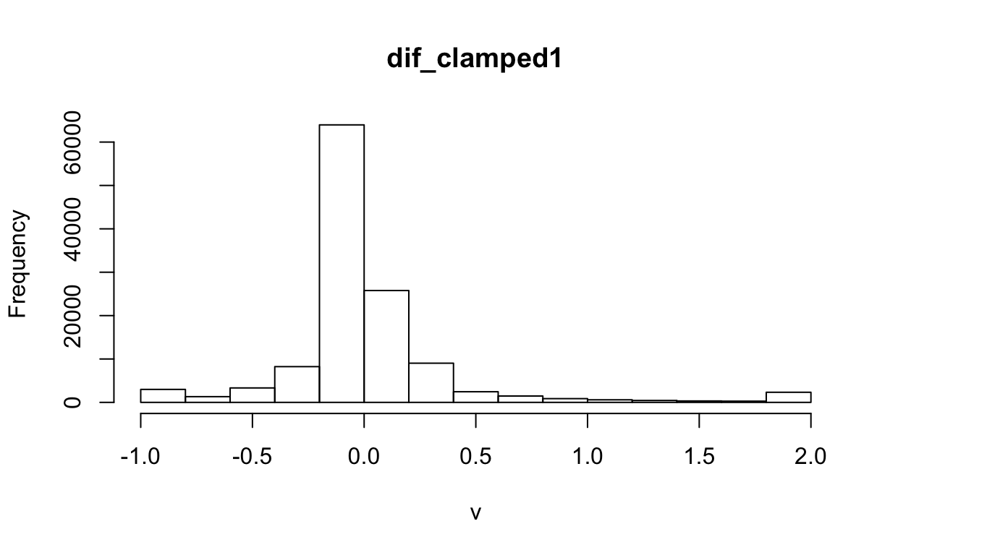
log(r_dif)
#> class : RasterLayer
#> dimensions : 360, 720, 259200 (nrow, ncol, ncell)
#> resolution : 0.5, 0.5 (x, y)
#> extent : -180, 180, -90, 90 (xmin, xmax, ymin, ymax)
#> coord. ref. : +proj=longlat +datum=WGS84 +no_defs +ellps=WGS84 +towgs84=0,0,0
#> data source : in memory
#> names : layer
#> values : -Inf, 4.529518 (min, max)
plot(log(r_dif), col = cols, main="log(now)")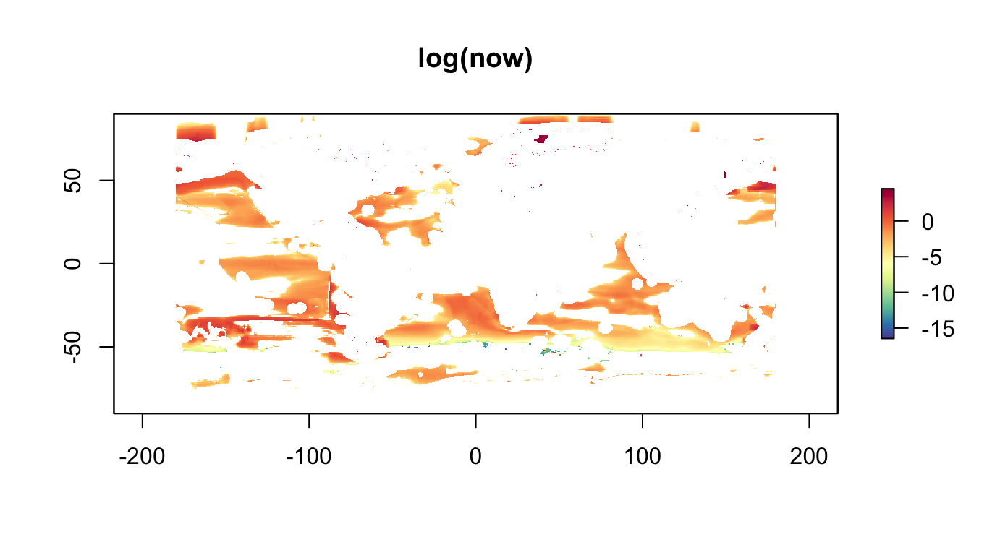
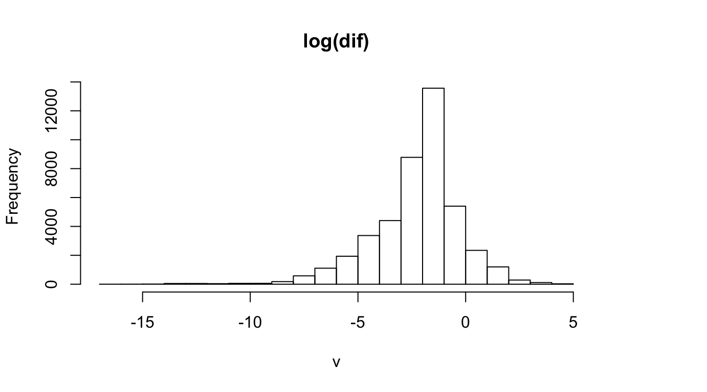
csvs <- list.files(dir_ubc, "*.csv$", recursive = T, full.names = T)
cat(paste(basename(csvs), collapse="\n"))
#> MCP_skipjackTuna_2010.csv
#> MCP_skipjackTuna_2050.csv
#> MCP_YellowfinTuna_2010.csv
#> MCP_YellowfinTuna_2050.csv